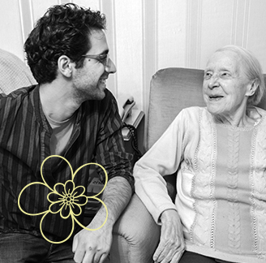
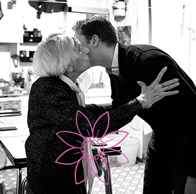
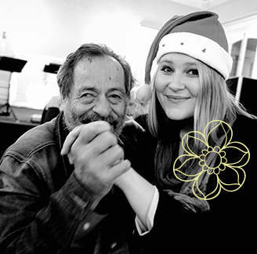
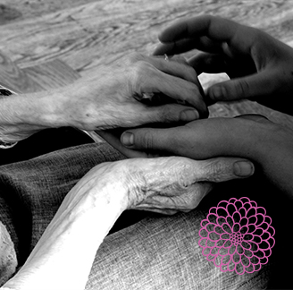
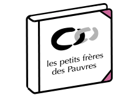
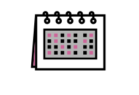
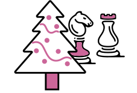

Petit bonheur
La visite d'un bénévole
pour le café
pour le café

Petit bonheur
Recevoir un bouquet
de fleurs
de fleurs

Petit bonheur
Passer le réveillon
de Noël entouré
de Noël entouré

Petit bonheur
Un coup de pouce pour
payer sa facture de
chauffage
payer sa facture de
chauffage
Petit bonheur
Partir quelques jours
à la mer
à la mer
Un soutien régulier aux
petits frères des Pauvres
petits frères des Pauvres
Des petits mots du bonheur
envoyés toute l'année
envoyés toute l'année
Le soutien régulier, c'est soutenir les actions
des petits frères des Pauvres dans la durée
des petits frères des Pauvres dans la durée
Une présence chaleureuse
(visites de nos bénévoles à domicile, en maison de retraite ou à l'hôpital)
Des moments qui viennent
rompre le quotidien
(réveillons de Noël,
visites, séjours de vacances…)
Un soutien matériel
(aide au paiement d'une dépense de santé imprévue, hébergement temporaire…)
Vos avantages...
Fraternité
et plaisir du don
et plaisir du don
Une fois que vous avez choisi le don régulier,
nous vous offrons la possibilité d'envoyer des
petits mots du bonheur aux personnes âgées
que vous aidez.
Une, deux, trois ou quatre fois par an, vous
pourrez leur écrire un message par e-mail ou
par SMS. Il sera imprimé sur une jolie carte et
remis par l'un de nos bénévoles à une personne
souffrant de solitude.
nous vous offrons la possibilité d'envoyer des
petits mots du bonheur aux personnes âgées
que vous aidez.
Une, deux, trois ou quatre fois par an, vous
pourrez leur écrire un message par e-mail ou
par SMS. Il sera imprimé sur une jolie carte et
remis par l'un de nos bénévoles à une personne
souffrant de solitude.
Liberté
Vous choisissez la
fréquence et le
montant de votre
soutien
fréquence et le
montant de votre
soutien
Tranquilité
Vous ne recevez plus nos
appels à don sauf cas
exceptionnel.
Nous vous tiendrons informé
de nos actions grâce à notre
newsletter et notre lettre
d'information petits frères des
Pauvres infos
appels à don sauf cas
exceptionnel.
Nous vous tiendrons informé
de nos actions grâce à notre
newsletter et notre lettre
d'information petits frères des
Pauvres infos
Défiscalisation
Vous déduisez de vos impôts
75 % de vos dons réguliers
dans la limite de 530 €
. Au-delà, votre réduction d'impôts
est de 66% du montant de vos
dons dans la limite de
20% de votre revenu imposable.
Nous vous envoyons votre reçu
fiscal une fois pas an, à
joindre à votre déclaration de revenus.
75 % de vos dons réguliers
dans la limite de 530 €
. Au-delà, votre réduction d'impôts
est de 66% du montant de vos
dons dans la limite de
20% de votre revenu imposable.
Nous vous envoyons votre reçu
fiscal une fois pas an, à
joindre à votre déclaration de revenus.
Souplesse
Le montant de votre aide
est prélevé sans aucun frais
pour vous. Vous êtes entièrement libre de mettre fin à tout moment
à vos prélèvements automatiques. Il vous suffit de nous écrire
ou de téléphoner à Fanny Barbe
au 01 49 23 13 54 ou de nous envoyer un email : donateurs@petitsfreresdespauvres.fr
est prélevé sans aucun frais
pour vous. Vous êtes entièrement libre de mettre fin à tout moment
à vos prélèvements automatiques. Il vous suffit de nous écrire
ou de téléphoner à Fanny Barbe
au 01 49 23 13 54 ou de nous envoyer un email : donateurs@petitsfreresdespauvres.fr
Les avantages pour
les petits frères des Pauvres
les petits frères des Pauvres
Efficacité
Grâce à la régularité de votre aide,
nous disposons de ressources
stables qui nous permettent de
mieux planifier nos actions.
nous disposons de ressources
stables qui nous permettent de
mieux planifier nos actions.
Économies
Grâce au prélèvement automatique,
nous faisons d'importantes économies en réduisant
nos frais de traitement des chèques, d'envoi de reçus
en cours d'année et de courriers d'appel au don.
nous faisons d'importantes économies en réduisant
nos frais de traitement des chèques, d'envoi de reçus
en cours d'année et de courriers d'appel au don.
Ma contribution, même modeste, est plus intéressante pour l'association qu'un don ponctuel, car elle s'inscrit dans une durée qui permet aux organisateurs de faire des projets...
Je suis très touchée par le dévouement des jeunes bénévoles. Ceux-ci ont compris que les personnes âgées avaient des trésors à leur communiquer, tels que le sens du don de soi, du respect de l'autre, de l'écoute et de la tolérance… Je me sens ainsi solidaire du bonheur partagé.
Je suis très touchée par le dévouement des jeunes bénévoles. Ceux-ci ont compris que les personnes âgées avaient des trésors à leur communiquer, tels que le sens du don de soi, du respect de l'autre, de l'écoute et de la tolérance… Je me sens ainsi solidaire du bonheur partagé.
Michelle, 67 ans
Les petits frères des Pauvres,
c'est :
c'est :

70 ans d'action
auprès de
nos ainés
nos ainés
36 400
personnes âgées
aidées en 2014
aidées en 2014

11 400
personnes
accompagnées
régulièrement
accompagnées
régulièrement

5 465
personnes invitées
à participer
à des activités
à participer
à des activités
*Sources : rapport annuel 2014